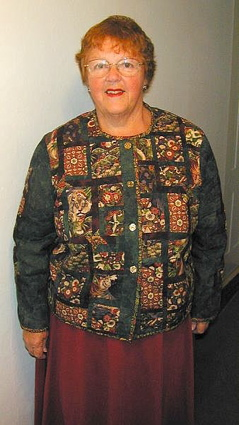
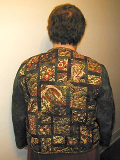
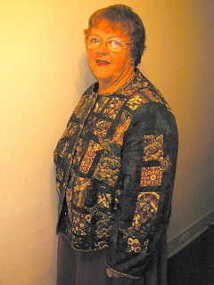
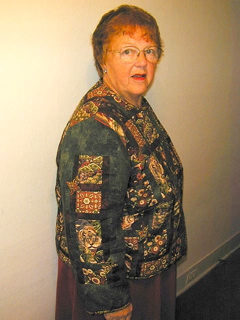
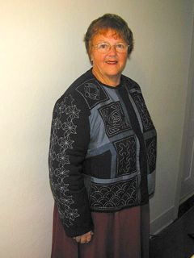
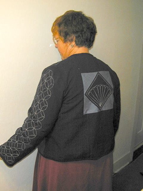
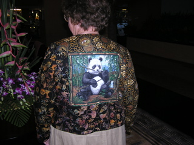
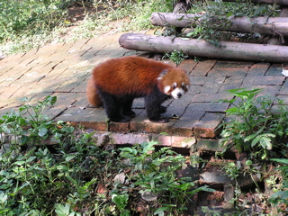

|

Crouching tiger This jacket was made for a trip to China. I chose the fabric based on the movie, "Crouching Tiger, Hidden Dragon." I put the crouching tiger on the front where it is easily seen, though there are others, and the hidden dragon prominently centered on the back where the wearer could not see it. Friendship stars are used at junctions and the buttons are in the style of Chinese coins. |

Hidden dragon |
|

Dragon on the left One sleeve also has the dragon ... |

Tiger on the right ... and one the tiger. |
|

Japanese jacket This jacket was made in anticipation of a trip to Japan as a study project in the technique of sashiko. Sashiko is a traditional Japanese technique using the same running stitch used in hand quilting in the US and is traditionally done on indigo dyed homespun which I combined with other blues as I created the jacket. The design of the jacket is my own, both in the choice and placement of fabrics and quilting. Finding the basic fabric, indigo dyed homespun, was the hardest part of the project despite the popularity of homespuns for the "country" look. Some of the patterns look like those used in US quilting; others are unique to the Japanese style. The books I used for instruction and inspiration were "The Classic Quilting of Sashiko from Ondori" and "Sashiko:Traditional Japanese Quilt Design from Nihon Vogue". |

Back of the Japanese jacket |
|

Panda jacket back This jacket was made for a recent trip to the Yunnan province of China which included a visit to the panda sanctuary near Chengdu, the capital of Sichuan Province. The idea started with what was sold as a pillow panel showing a panda eating bamboo, its favorite food. This became the center of the back. |

Lesser panda Before I really got to work on it I found the two other panda fabrics used. Though it seems to show traditionally black and white style pandas the rust and black is especially appropriate since it is the coloration of the lesser pandas also resident at the sanctuary. This fabric is prominent on the left sleeve and lower portion of the back of the jacket. |
|
Panda jacket front They all came together on the front as well and in keeping with tradition the closing is a combination of corded loops and Chinese knot buttons.It was fun to do, fun to wear and makes a great memory of the trip. |
|
All contents of this site (grannieanniedesigns.com) are copyright © 2007-2021 Anne Schweisguth. Publication rights may be requested by contacting me at "anne at grannieanniedesigns dot com". |
|